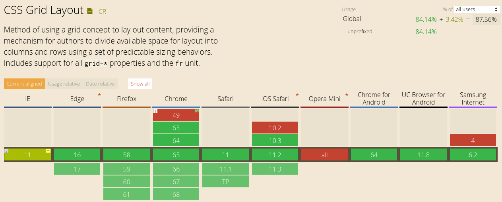
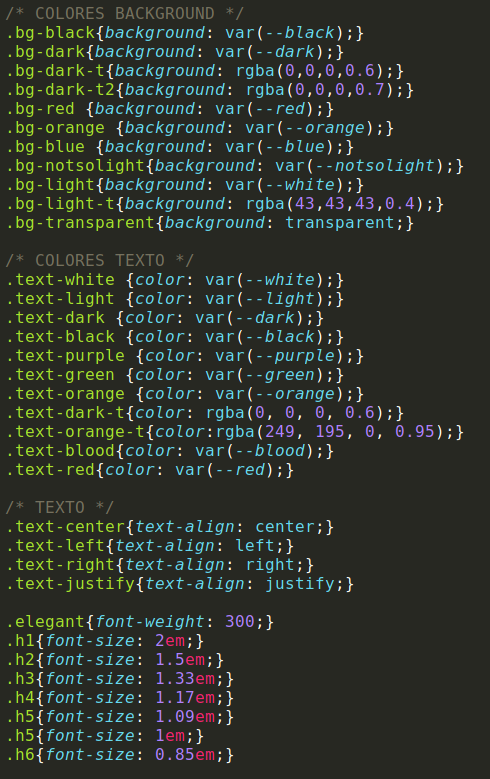
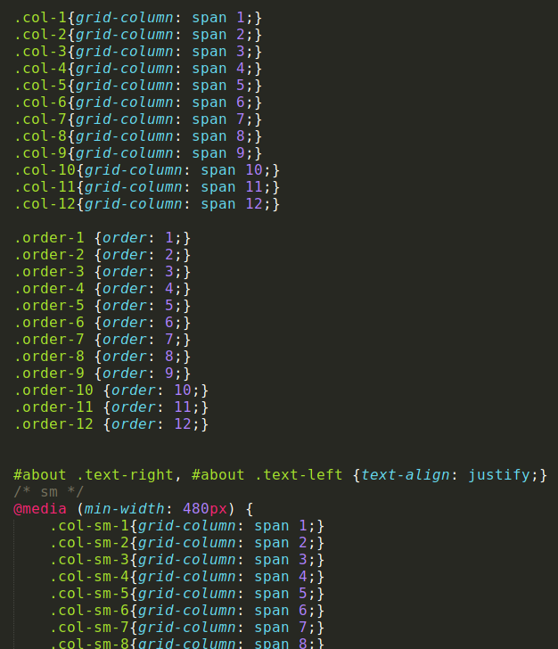
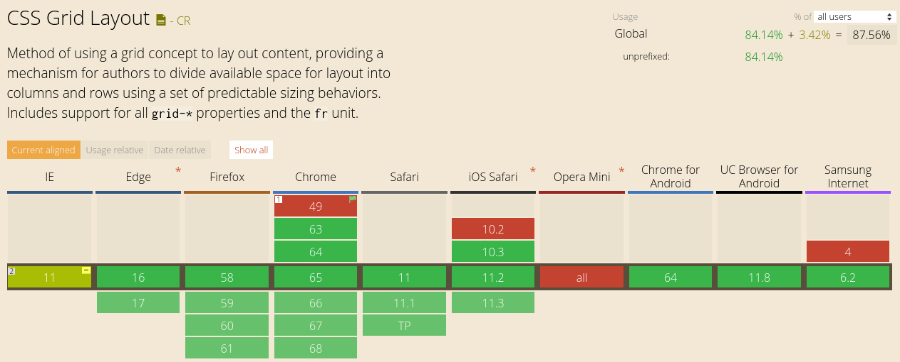

Acerca de nosotros
Práctica 1 de la asignatura Programación del Cliente Web
Perteneciente al 2º curso de la titulación del Grado en Ingeniería Multimedia en la Universidad de Alicante.
Dónde haremos uso de los lenguajes:
HTML
CSS
Javascript
Implementación
Para la realización de la primera práctica de Programación del Cliente Web, hemos usado las principales características y ventajas de los lenguajes de programación para páginas web, HTML y CSS.
En cuanto al HTML, hemos usado las principales etiquetas que nos proporciona. De entre ellas, destacamos el uso de <div> y <span>, debido a que hemos utilizado un método peculiar a la hora de la implementación del CSS, de lo que hablaremos posteriormente.
Además, queremos destacar también, el uso de la etiqueta <label>, que permite una mejor navegación a la hora de usar formularios, las etiquetas <header>, <section>, <footer>, <figure>, <figcaption>, <hr/>... que hemos utilizado para estructurar el contenido de la página web.
En cuanto al código CSS, puesto que en el cuatrimestre pasado cursamos la asignatura de Diseño de Sistemas Multimedia y utilizamos Bootstrap, nos acomodamos a un sistema de maquetado, que consideramos más flexible aunque maś tedioso. Por lo tanto, construimos un CSS desde 0, en el que fuimos introduciendo las reglas que consideramos oportunas a la hora de la maquetación.
El funcionamiento es similar a Bootstrap. La clase <row> divide su contenido en 12 columnas. Esta división se ha realizado con el grid de CSS.
Básicamente, añadimos las reglas que necesitamos para lograr el efecto deseado. De esta manera, en lugar de tener que crear reglas de CSS más complejas, hacemos uso de una combinación de varias reglas simples.
También hemos cambiado los colores de selección y la barra de desplazamiento (ésta solo en Chrome), mediante las pseudoclases <::-webkit-scrollbar>, <::-webkit-scrollbar-track>, <::-webkit-scrollbar-thumb>, <::selection> y <::-moz-selection>.
Por lo que ésta es la forma con la que hemos maquetado la totalidad de los .html de la práctica. Debemos añadir que el CSS está adaptado para los dos navegadores más usados como son Google Chrome y Mozilla Firefox. Si nos movemos a Explorer, como hemos hecho uso del Grid Layout que aporta CSS, éste navegador no soporta su uso.  Referente a los puntos de la práctica, hemos implementado todos los que figuran en ella. De entre ellos, destacar el uso de una WebFont mediante Google Fonts, y de iconos con FontAwesome, incluyendo ambos en el header de la página:
En cuanto al HTML, hemos usado las principales etiquetas que nos proporciona. De entre ellas, destacamos el uso de <div> y <span>, debido a que hemos utilizado un método peculiar a la hora de la implementación del CSS, de lo que hablaremos posteriormente.
Además, queremos destacar también, el uso de la etiqueta <label>, que permite una mejor navegación a la hora de usar formularios, las etiquetas <header>, <section>, <footer>, <figure>, <figcaption>, <hr/>... que hemos utilizado para estructurar el contenido de la página web.
En cuanto al código CSS, puesto que en el cuatrimestre pasado cursamos la asignatura de Diseño de Sistemas Multimedia y utilizamos Bootstrap, nos acomodamos a un sistema de maquetado, que consideramos más flexible aunque maś tedioso. Por lo tanto, construimos un CSS desde 0, en el que fuimos introduciendo las reglas que consideramos oportunas a la hora de la maquetación.


El funcionamiento es similar a Bootstrap. La clase <row> divide su contenido en 12 columnas. Esta división se ha realizado con el grid de CSS.
De manera que, si quisieramos crear un contendor con fondo oscuro que ocupara 6 columnas en pantallas de más de 992px, 8 en pantallas de 768px y las 12 en menores, usaríamos:
<div class="col-12 col-md-6 col-lg-8 bg-dark-t2 text-light">
<div class="col-12 col-md-6 col-lg-8 bg-dark-t2 text-light">
Si quisiéramos que tuviera el fondo naranja y letras negras, bastaría con cambiar las etiquetas bg- y text-:
<div class="col-12 col-md-6 col-lg-8 bg-orange text-dark">
<div class="col-12 col-md-6 col-lg-8 bg-orange text-dark">
También hemos cambiado los colores de selección y la barra de desplazamiento (ésta solo en Chrome), mediante las pseudoclases <::-webkit-scrollbar>, <::-webkit-scrollbar-track>, <::-webkit-scrollbar-thumb>, <::selection> y <::-moz-selection>.
Por lo que ésta es la forma con la que hemos maquetado la totalidad de los .html de la práctica. Debemos añadir que el CSS está adaptado para los dos navegadores más usados como son Google Chrome y Mozilla Firefox. Si nos movemos a Explorer, como hemos hecho uso del Grid Layout que aporta CSS, éste navegador no soporta su uso.  Referente a los puntos de la práctica, hemos implementado todos los que figuran en ella. De entre ellos, destacar el uso de una WebFont mediante Google Fonts, y de iconos con FontAwesome, incluyendo ambos en el header de la página:
<link href="https://use.fontawesome.com/releases/v5.0.6/css/all.css" rel="stylesheet">
<link href="https://fonts.googleapis.com/css?family=Quicksand" rel="stylesheet">
<link href="https://fonts.googleapis.com/css?family=Quicksand" rel="stylesheet">
Autores

Pablo Máñez Fernández
pablomanez@hotmail.com
46084035-Q
Viernes 11:00 - 13:00
Danny Gabriel Rivera Solórzano
datrixz997@gmail.com
23906238-S
Lunes 17:00 - 19:00